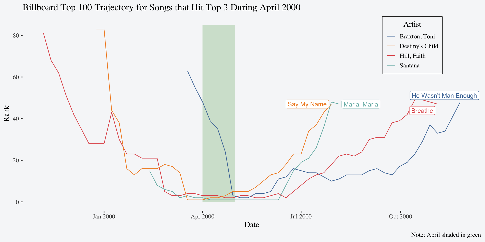

> # A tibble: 5,307 × 6
> artist track time date_entered week rank
> <chr> <chr> <time> <date> <int> <dbl>
> 1 2 Pac Baby Don't Cry (Keep... 04:22 2000-02-26 1 87
> 2 2 Pac Baby Don't Cry (Keep... 04:22 2000-02-26 2 82
> 3 2 Pac Baby Don't Cry (Keep... 04:22 2000-02-26 3 72
> 4 2 Pac Baby Don't Cry (Keep... 04:22 2000-02-26 4 77
> 5 2 Pac Baby Don't Cry (Keep... 04:22 2000-02-26 5 87
> 6 2 Pac Baby Don't Cry (Keep... 04:22 2000-02-26 6 94
> 7 2 Pac Baby Don't Cry (Keep... 04:22 2000-02-26 7 99
> 8 2Ge+her The Hardest Part Of ... 03:15 2000-09-02 1 91
> 9 2Ge+her The Hardest Part Of ... 03:15 2000-09-02 2 87
> 10 2Ge+her The Hardest Part Of ... 03:15 2000-09-02 3 92
> # ℹ 5,297 more rowsHomework 5
Instructions
Answer each of the following questions. Be sure to display all your code in the rendered version (use echo: true throughout). You can make this a global option for your whole document by putting it directly in the YAML of your qmd:
title: "Homework 5"
execute:
echo: true
warning: falseDownload the billboard data set introduced in lecture to the same folder where you’re saving your qmd for this homework, or set the file path in read_csv to the correct location.
Exercises
- Read in the data, clean up the names, and pivot it in a way so the first few rows look like this:
- Create a variable named
datethat corresponds to theweekbased on thedate_entered. For instance, if thedate_enteredis1-13-2000andweekis 1, then whenweekis 2datewill have a value of1-20-2000. (Hint: Try usingif_else()here). The first few rows should look something like this:
billboard_tidy_date> # A tibble: 5,307 × 7
> artist track time date_entered week rank date
> <chr> <chr> <time> <date> <int> <dbl> <date>
> 1 2 Pac Baby Don't Cry (Keep... 04:22 2000-02-26 1 87 2000-02-26
> 2 2 Pac Baby Don't Cry (Keep... 04:22 2000-02-26 2 82 2000-03-04
> 3 2 Pac Baby Don't Cry (Keep... 04:22 2000-02-26 3 72 2000-03-11
> 4 2 Pac Baby Don't Cry (Keep... 04:22 2000-02-26 4 77 2000-03-18
> 5 2 Pac Baby Don't Cry (Keep... 04:22 2000-02-26 5 87 2000-03-25
> 6 2 Pac Baby Don't Cry (Keep... 04:22 2000-02-26 6 94 2000-04-01
> 7 2 Pac Baby Don't Cry (Keep... 04:22 2000-02-26 7 99 2000-04-08
> 8 2Ge+her The Hardest Part Of ... 03:15 2000-09-02 1 91 2000-09-02
> 9 2Ge+her The Hardest Part Of ... 03:15 2000-09-02 2 87 2000-09-09
> 10 2Ge+her The Hardest Part Of ... 03:15 2000-09-02 3 92 2000-09-16
> # ℹ 5,297 more rowsIf you get stuck on Problem 2, feel free to share in your submitted homework what you figured out and where you got stuck. You are also welcome to create a different column using any of the skills we have learned; describe what column you are creating and how you did it. You do not need Problem 2 in order to do the rest of the homework.
- Create a dataset of the song(s) with the most weeks in the top 3 by month for the year 2000. The final dataset for Problem 3 should look like this, though you can call the columns whatever you want:
> # A tibble: 19 × 4
> month artist track peak_weeks
> <dbl> <chr> <chr> <dbl>
> 1 1 Aguilera, Christina What A Girl Wants 3
> 2 2 Savage Garden I Knew I Loved You 4
> 3 3 Lonestar Amazed 4
> 4 4 Hill, Faith Breathe 5
> 5 4 Santana Maria, Maria 5
> 6 5 Hill, Faith Breathe 4
> 7 5 Santana Maria, Maria 4
> 8 6 Aaliyah Try Again 2
> 9 6 Anthony, Marc You Sang To Me 2
> 10 6 Hill, Faith Breathe 2
> 11 6 Santana Maria, Maria 2
> 12 6 Vertical Horizon Everything You Want 2
> 13 7 Aaliyah Try Again 4
> 14 8 Sisqo Incomplete 4
> 15 8 matchbox twenty Bent 4
> 16 9 Janet Doesn't Really Matte... 5
> 17 10 Madonna Music 4
> 18 11 Creed With Arms Wide Open 4
> 19 12 Destiny's Child Independent Women Pa... 5- Pick one month of 2000 and visualize the entire charting trajectory of the songs that spent at least 1 week in the top 3 during that month. Hint: Start with the data set created in question 3. An example of what this could look like for April is provided below. Your plot does not have to look just like this one; your plot should look polished and be easy to interpret, but it does not have to be fancy.
